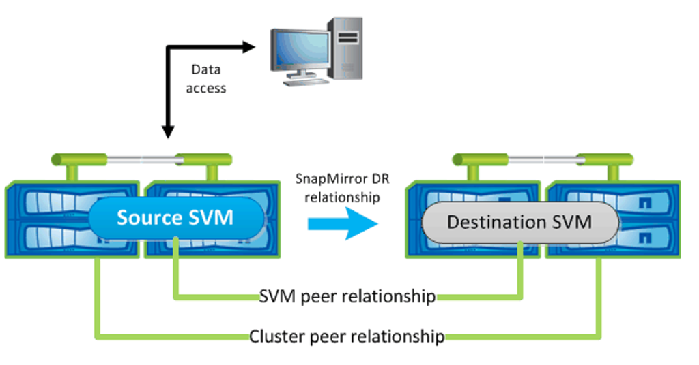
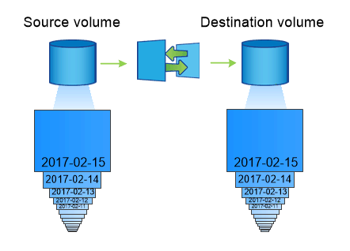

개념
개념
데이터 보호
 변경 제안
변경 제안
NetApp 스토리지 플랫폼이 제공하는 데이터 보호 및 복구 성능 옵션에 대해 알아보십시오. Astra Trident는 이러한 기능 중 일부를 활용할 수 있는 볼륨을 프로비저닝할 수 있습니다. 지속성 요구사항이 있는 각 애플리케이션에 대한 데이터 보호 및 복구 전략이 있어야 합니다.
를 백업합니다 etcd 클러스터 데이터
Astra Trident는 Kubernetes 클러스터에 메타데이터를 저장합니다 etcd 데이터베이스: 를 주기적으로 백업합니다 etcd 클러스터 데이터는 재해 시나리오에서 Kubernetes 클러스터를 복구하는 데 중요합니다.
-
를 클릭합니다
etcdctl snapshot save명령을 사용하면 의 시점 스냅샷을 생성할 수 있습니다etcd클러스터:sudo docker run --rm -v /backup:/backup \ --network host \ -v /etc/kubernetes/pki/etcd:/etc/kubernetes/pki/etcd \ --env ETCDCTL_API=3 \ registry.k8s.io/etcd-amd64:3.2.18 \ etcdctl --endpoints=https://127.0.0.1:2379 \ --cacert=/etc/kubernetes/pki/etcd/ca.crt \ --cert=/etc/kubernetes/pki/etcd/healthcheck-client.crt \ --key=/etc/kubernetes/pki/etcd/healthcheck-client.key \ snapshot save /backup/etcd-snapshot.db
이 명령은 etcd 컨테이너를 스핀업하여 etcd 스냅샷을 생성하고 에 저장합니다
/backup디렉토리. -
재해가 발생할 경우 etcd 스냅샷을 사용하여 Kubernetes 클러스터를 사용할 수 있습니다. 를 사용합니다
etcdctl snapshot restore에 대해 생성된 특정 스냅샷을 복원하는 명령입니다/var/lib/etcd폴더. 복원 후, 이(가) 있는지 확인합니다/var/lib/etcd폴더가 로 채워졌습니다member폴더. 다음은 의 예입니다etcdctl snapshot restore명령:etcdctl snapshot restore '/backup/etcd-snapshot-latest.db' ; mv /default.etcd/member/ /var/lib/etcd/
-
Kubernetes 클러스터를 초기화하기 전에 필요한 인증서를 모두 복사합니다.
-
로 클러스터를 생성합니다
--ignore-preflight-errors=DirAvailable—var-lib-etcd깃발. -
클러스터가 완료되면 kubbe-system 포드가 시작되었는지 확인합니다.
-
를 사용합니다
kubectl get crdTrident에 의해 생성된 사용자 지정 리소스가 있는지 확인하고 Trident 객체를 검색하여 모든 데이터를 사용할 수 있는지 확인하는 명령입니다.
ONTAP 스냅샷을 사용하여 날짜를 복구합니다
스냅샷은 애플리케이션 데이터에 대한 시점 복구 옵션을 제공하여 중요한 역할을 합니다. 그러나 스냅샷은 자체적으로 백업되는 것이 아니며, 스토리지 시스템 장애나 기타 재난으로부터 데이터를 보호하지 않습니다. 그러나 대부분의 경우 데이터를 쉽고 빠르고 쉽게 복구할 수 있습니다. ONTAP 스냅샷 기술을 사용하여 볼륨을 백업하는 방법과 복원하는 방법에 대해 알아보십시오.
-
백엔드에 스냅샷 정책이 정의되지 않은 경우 기본적으로 을 사용합니다
none정책. 이로 인해 ONTAP에서 자동 스냅샷이 생성되지 않습니다. 그러나 스토리지 관리자는 ONTAP 관리 인터페이스를 통해 수동 스냅샷을 생성하거나 스냅샷 정책을 변경할 수 있습니다. Trident 작업에는 영향을 주지 않습니다. -
스냅샷 디렉토리는 기본적으로 숨겨져 있습니다. 이렇게 하면 를 사용하여 프로비저닝된 볼륨의 호환성을 극대화할 수 있습니다
ontap-nas및ontap-nas-economy드라이버. 를 활성화합니다.snapshot디렉토리를 선택합니다ontap-nas및ontap-nas-economy응용 프로그램이 스냅샷에서 직접 데이터를 복구할 수 있도록 하는 드라이버입니다. -
를 사용하여 이전 스냅숏에 기록된 상태로 볼륨을 복원합니다
volume snapshot restoreONTAP CLI 명령 스냅샷 복사본을 복구할 때 복구 작업은 기존 볼륨 구성을 덮어씁니다. 스냅샷 복사본이 생성된 후 볼륨의 데이터에 대한 모든 변경 사항은 손실됩니다.
cluster1::*> volume snapshot restore -vserver vs0 -volume vol3 -snapshot vol3_snap_archive
ONTAP를 사용하여 데이터 복제
스토리지 시스템 장애로 인한 데이터 손실로부터 데이터를 복제하는 것은 중요한 역할을 할 수 있습니다.

|
ONTAP 복제 기술에 대한 자세한 내용은 를 참조하십시오 "ONTAP 설명서". |
SnapMirror SVM(Storage Virtual Machines) 복제
을 사용할 수 있습니다 "SnapMirror를 참조하십시오" 전체 SVM을 복제하며, 여기에는 구성 설정 및 볼륨이 포함됩니다. 재해가 발생할 경우 SnapMirror 대상 SVM을 활성화하여 데이터 제공을 시작할 수 있습니다. 시스템이 복원되면 기본 시스템으로 다시 전환할 수 있습니다.
Astra Trident는 복제 관계 자체를 구성할 수 없기 때문에 스토리지 관리자는 ONTAP의 SnapMirror SVM 복제 기능을 사용하여 DR(재해 복구) 대상에 볼륨을 자동으로 복제할 수 있습니다.
SnapMirror SVM 복제 기능을 사용할 계획이거나 현재 기능을 사용 중인 경우 다음을 고려하십시오.
-
SVM-DR이 활성화된 각 SVM에 대해 별개의 백엔드를 생성해야 합니다.
-
필요한 경우를 제외하고 복제된 백엔드를 선택하지 않도록 스토리지 클래스를 구성해야 합니다. 이는 SVM-DR을 지원하는 백엔드에 복제 관계를 프로비저닝하지 않아도 되는 볼륨이 생기지 않도록 하는 데 중요합니다.
-
애플리케이션 관리자는 데이터 복제와 관련된 추가 비용 및 복잡성을 이해하고 데이터 복제를 활용하기 전에 복구 계획을 결정해야 합니다.
-
SnapMirror 대상 SVM을 활성화하기 전에 예약된 SnapMirror 전송을 모두 중지하고, 진행 중인 SnapMirror 전송을 모두 중단하고, 복제 관계를 중지하고, 소스 SVM을 중지한 다음, SnapMirror 대상 SVM을 시작하십시오.
-
Astra Trident는 SVM 장애를 자동으로 감지하지 않습니다. 따라서 장애가 발생하면 관리자가 를 실행해야 합니다
tridentctl backend update새 백엔드에 대한 Trident의 장애 조치를 트리거하는 명령입니다.
다음은 SVM 설정 단계에 대한 개요입니다.
-
소스 클러스터와 타겟 클러스터 및 SVM 간 피어링을 설정합니다.
-
를 사용하여 대상 SVM을 생성합니다
-subtype dp-destination옵션을 선택합니다. -
필요한 간격으로 복제가 수행되도록 복제 작업 스케줄을 생성합니다.
-
를 사용하여 대상 SVM에서 소스 SVM으로 SnapMirror 복제를 생성합니다
-identity-preserve true소스 SVM 구성과 소스 SVM 인터페이스가 타겟으로 복제되도록 보장하는 옵션 대상 SVM에서 SnapMirror SVM 복제 관계를 초기화합니다.

Trident를 위한 재해 복구 워크플로우
Astra Trident 19.07 이상 Kubernetes CRD를 사용하여 자체 상태를 저장 및 관리합니다. Kubernetes 클러스터를 사용합니다 etcd 메타데이터를 저장합니다. 이 경우에는 Kubernetes를 사용하는 것으로 가정합니다 etcd 데이터 파일 및 인증서는 NetApp FlexVolume에 저장됩니다. 이 FlexVolume은 SVM에 상주하며 보조 사이트의 대상 SVM과 SnapMirror SVM-DR 관계가 있습니다.
다음 단계에서는 재해 발생 시 Astra Trident를 사용하여 단일 마스터 Kubernetes 클러스터를 복구하는 방법을 설명합니다.
-
소스 SVM에 장애가 발생하면 SnapMirror 타겟 SVM을 활성화합니다. 이렇게 하려면 예약된 SnapMirror 전송을 중지하고, 지속적인 SnapMirror 전송을 중단하고, 복제 관계를 중단하고, 소스 SVM을 중지하고, 타겟 SVM을 시작해야 합니다.
-
대상 SVM에서 Kubernetes가 포함된 볼륨을 마운트합니다
etcd마스터 노드로 설정할 호스트에 데이터 파일 및 인증서 -
에서 Kubernetes 클러스터와 관련된 모든 필수 인증서를 복사합니다
/etc/kubernetes/pki그리고 etcdmember파일 위치/var/lib/etcd. -
를 사용하여 Kubernetes 클러스터를 생성합니다
kubeadm init명령과 함께--ignore-preflight-errors=DirAvailable—var-lib-etcd깃발. Kubernetes 노드에 사용되는 호스트 이름은 소스 Kubernetes 클러스터와 동일해야 합니다. -
를 실행합니다
kubectl get crd모든 Trident 사용자 지정 리소스가 표시되는지 확인하고 Trident 객체를 검색하여 모든 데이터를 사용할 수 있는지 확인하는 명령입니다. -
를 실행하여 새 대상 SVM 이름을 반영하도록 필수 백엔드를 업데이트합니다
./tridentctl update backend <backend-name> -f <backend-json-file> -n <namespace>명령.
|
|
애플리케이션의 영구 볼륨의 경우, 대상 SVM이 활성화될 때 Trident가 프로비저닝한 모든 볼륨이 데이터 제공을 시작합니다. 위에서 설명한 단계를 사용하여 대상 측에 Kubernetes 클러스터를 설정한 후에는 모든 구축과 포드가 시작되고 패키지 애플리케이션은 문제 없이 실행되어야 합니다. |
SnapMirror 볼륨 복제
ONTAP SnapMirror 볼륨 복제는 재해 복구 기능으로, 볼륨 레벨의 운영 스토리지에서 대상 스토리지로 페일오버할 수 있도록 지원합니다. SnapMirror는 스냅샷을 동기화하여 보조 스토리지에 운영 스토리지의 볼륨 복제본 또는 미러를 생성합니다.
다음은 ONTAP SnapMirror 볼륨 복제 설정 단계에 대한 개요입니다.
-
볼륨이 상주하는 클러스터와 볼륨의 데이터를 제공하는 SVM 간에 피어링을 설정합니다.
-
관계의 동작을 제어하고 해당 관계에 대한 구성 특성을 지정하는 SnapMirror 정책을 생성합니다.
-
를 사용하여 타겟 볼륨과 소스 볼륨 사이에 SnapMirror 관계를 생성합니다[
snapmirror create^] 명령을 사용하여 적절한 SnapMirror 정책을 할당합니다. -
SnapMirror 관계가 생성된 후 소스 볼륨에서 타겟 볼륨으로의 기본 전송이 완료되도록 관계를 초기화합니다.

Trident를 위한 SnapMirror 볼륨 재해 복구 워크플로우
다음 단계에서는 Astra Trident를 사용하여 단일 마스터 Kubernetes 클러스터를 복구하는 방법을 설명합니다.
-
재해가 발생할 경우 예약된 SnapMirror 전송을 모두 중지하고 진행 중인 SnapMirror 전송을 모두 중단하십시오. 대상 볼륨이 읽기/쓰기가 되도록 대상 볼륨과 소스 볼륨 간의 복제 관계를 중단하십시오.
-
대상 SVM에서 Kubernetes가 포함된 볼륨을 마운트합니다
etcd호스트에 데이터 파일 및 인증서를 제공하며, 마스터 노드로 설정됩니다. -
에서 Kubernetes 클러스터와 관련된 모든 필수 인증서를 복사합니다
/etc/kubernetes/pki그리고 etcdmember파일 위치/var/lib/etcd. -
을 실행하여 Kubernetes 클러스터를 생성합니다
kubeadm init명령과 함께--ignore-preflight-errors=DirAvailable—var-lib-etcd깃발. 호스트 이름은 소스 Kubernetes 클러스터와 같아야 합니다. -
를 실행합니다
kubectl get crd모든 Trident 사용자 지정 리소스가 표시되는지 확인하고 Trident 개체를 검색하여 모든 데이터를 사용할 수 있는지 확인하는 명령입니다. -
이전 백엔드를 정리하고 Trident에 새 백엔드를 만듭니다. 새로운 관리 및 데이터 LIF, 새로운 SVM 이름 및 대상 SVM의 암호를 지정합니다.
애플리케이션의 영구 볼륨에 대한 재해 복구 워크플로우
다음 단계에서는 재해 발생 시 컨테이너화된 워크로드에 SnapMirror 대상 볼륨을 제공하는 방법을 설명합니다.
-
예약된 모든 SnapMirror 전송을 중지하고 진행 중인 모든 SnapMirror 전송을 중단합니다. 대상 볼륨이 읽기/쓰기가 되도록 대상 볼륨과 소스 볼륨 간의 복제 관계를 중단하십시오. 소스 SVM의 볼륨에 연결된 PVC를 사용하는 구축을 정리합니다.
-
위에서 설명한 단계를 사용하여 대상 측에 Kubernetes 클러스터를 설정한 후 Kubernetes 클러스터에서 배포, PVC 및 PV를 정리합니다.
-
Trident에서 새로운 관리 및 데이터 LIF, 새 SVM 이름 및 대상 SVM의 암호를 지정하여 새 백엔드를 생성합니다.
-
Trident 가져오기 기능을 사용하여 새 PVC에 바인딩된 PV로 필요한 볼륨을 가져옵니다.
-
새로 생성된 PVC와 함께 애플리케이션 배포를 재배포합니다.
Element 스냅샷을 사용하여 데이터 복구
볼륨에 대한 스냅샷 스케줄을 설정하고 필요한 간격으로 스냅샷을 생성하도록 하여 Element 볼륨의 데이터를 백업합니다. Element UI 또는 API를 사용하여 스냅샷 스케줄을 설정해야 합니다. 현재 를 통해 스냅샷 스케줄을 볼륨으로 설정할 수 없습니다 solidfire-san 드라이버.
데이터가 손상된 경우 Element UI 또는 API를 사용하여 특정 스냅샷을 선택하고 볼륨을 스냅숏으로 수동으로 롤백할 수 있습니다. 이렇게 하면 스냅샷이 생성된 이후 볼륨에 대한 모든 변경 사항이 복구됩니다.